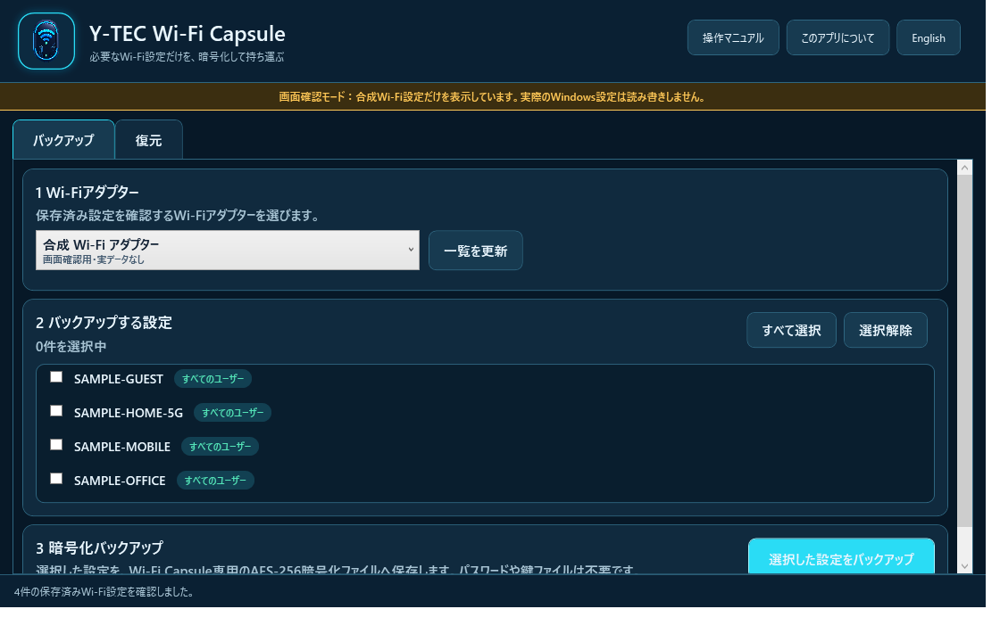
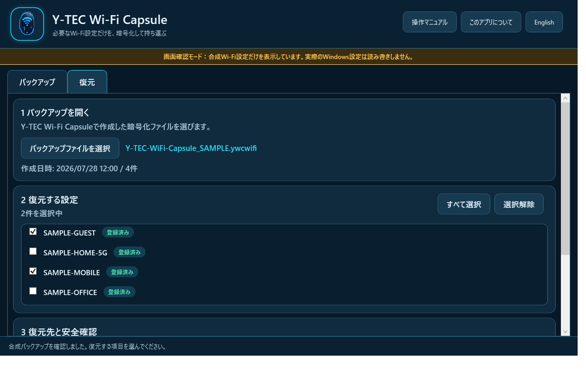

Y-TEC Wi-Fi Capsule
操作マニュアル - 必要なWi-Fi設定だけを暗号化して持ち運ぶ
Version 1.1.0 / 2026-08-251. このアプリについて
Windowsに保存されているWi-Fi設定を一覧で確認し、必要な設定だけを1つの暗号化ファイルへ保存・復元するアプリです。
- パスワードや鍵ファイルの準備は不要です。
- バックアップの拡張子は
.ywcwifiです。 - Wi-Fi設定の平文XMLをディスクへ保存しません。
- 外部通信、クラウド同期、アクセス解析はありません。
- Y-TEC公式版は1.0.0以降の公式バックアップと互換性があります。
- 日本語と英語に対応し、起動後も画面上の［English／日本語］で切り替えられます。
Wi-Fiの名前は選択のため画面へ表示します。Wi-Fiキーそのものを画面やログへ表示する機能はありません。
2. 対応環境と起動
| 項目 | 内容 |
|---|---|
| Windows | Windows 7 SP1 / 8 / 8.1 / 10 / 11 |
| CPU | 32ビット / 64ビット |
| 必要環境 | .NET Framework 4.6.1以降、Wi-Fiアダプター、WLAN AutoConfig |
| 権限 | 起動時に管理者権限が必要 |
配布ZIPを任意のフォルダーへ展開します。ZIPの中から直接起動しないでください。
YtecWifiCapsule.exeをダブルクリックします。ユーザーアカウント制御が表示されたら、発行元と配布元を確認して［はい］を選びます。
初期表示はWindowsの表示言語が日本語なら日本語、それ以外は英語です。画面で切り替えた言語は起動中だけ有効で、操作マニュアルも現在の言語で開きます。
一般公開初版は未署名です。配布ページに記載したSHA-256と、ZIPのSHA-256が一致することを確認してください。
Windows 7 / 8 / 8.1はOS自体のサポートが終了しています。本アプリが動作しても、OSの安全性は保証されません。
3. Wi-Fi設定をバックアップする
［バックアップ］タブを開きます。
対象のWi-Fiアダプターを選びます。表示が古い場合は［一覧を更新］を押します。
保存したいWi-Fi設定だけをチェックします。［すべて選択］と［選択解除］も使えます。
［選択した設定をバックアップ］を押し、確認画面で件数を確認します。
保存先と新しいファイル名を指定します。同名ファイルは上書きしません。
「バックアップ完了」が表示されたら、ファイルを安全な保存先へ保管します。

バックアップ直前に設定が変わると処理を中止します。［一覧を更新］後、選び直してください。
4. Wi-Fi設定を復元する
［復元］タブを開きます。
［バックアップファイルを選択］から
.ywcwifiを開きます。作成日時と件数を確認し、復元する設定だけをチェックします。
復元先のWi-Fiアダプターを選びます。
通常は上書きチェックを付けずに［選択した設定を復元］を押します。
復元・変更なし・失敗の件数を確認します。

復元後はWindowsのWi-Fi設定画面を開き、対象ネットワークへ接続できることを確認してください。
5. 同名設定の扱い
復元一覧の右側に、復元先での状態が表示されます。
| 表示 | 既定の動作 |
|---|---|
| 新規 | 選択するとWindowsへ追加します。 |
| 登録済み | 上書き未許可では変更せずスキップします。 |
［同名の保存済みWi-Fi設定も上書きする］を有効にすると、選択した同名設定を置き換えます。現在の設定を残したい場合は有効にしないでください。
6. 暗号化と保管
- AES-256-CBCで暗号化し、HMAC-SHA-256で改ざんを検知します。
- バックアップごとにランダムなソルトとIVを使います。
- 改ざん検知に成功するまで復号しません。
- パスワード、鍵ファイル、PC固有の鍵は使いません。
内蔵鍵方式のため、バックアップを別PCへ移し、本アプリから復元できます。
Y-TEC公式ビルドは、既存バックアップとの互換性を保つ公式アプリ鍵をビルド時に埋め込みます。公式鍵は公開ソースに含まれません。
公開ソースの標準ビルドは、値が公開されている開発鍵を使用します。画面上部に警告が出るビルドを実データのバックアップへ使用しないでください。カスタム鍵ビルドはY-TEC公式版と互換性がありません。
公式版でも、実行ファイルやメモリを専門的に解析する相手には秘匿性を保証できません。バックアップファイルを公開したり、第三者へ渡したりしないでください。
重要な設定は、暗号化ファイルだけに頼らず複数の安全な媒体へ保管してください。
7. 困ったとき
| 症状 | 確認すること |
|---|---|
| Wi-Fiアダプターがない | 無線LAN機器が有効か、WLAN AutoConfigサービスが動作しているか確認します。 |
| 保存設定が出ない | 正しいアダプターを選び、［一覧を更新］を押します。 |
| キーを取得できない | 管理者として起動しているか確認します。管理ポリシーによっては取得できません。 |
| バックアップを開けない | 拡張子、ファイル欠損、別製品のファイル、改ざんの有無を確認します。 |
| 復元に失敗する | 移行先OSやアダプターの認証対応と、管理者としての起動を確認します。 |
| 同名設定が変わらない | 安全のため既定ではスキップします。置き換えてよい場合だけ上書きを有効にします。 |
8. 制限事項
- Wi-Fiへ自動接続するアプリではありません。
- 近くのネットワーク、BSSID、位置情報を取得しません。
- 企業802.1X証明書、外部証明書、スマートカード、ハードウェア鍵の移行を保証しません。
- 新しいWindows固有の認証方式を古いWindowsが理解できない場合、登録に失敗します。
- Windows on ARM、Windows Server、macOS、Linux、スマートフォンには対応しません。
- 未署名版ではWindows SmartScreenが警告する場合があります。警告を回避するよう案内する機能はありません。
- オープンソースであることは、第三者ビルドがY-TEC公式版であることや、公式バックアップとの互換性を意味しません。